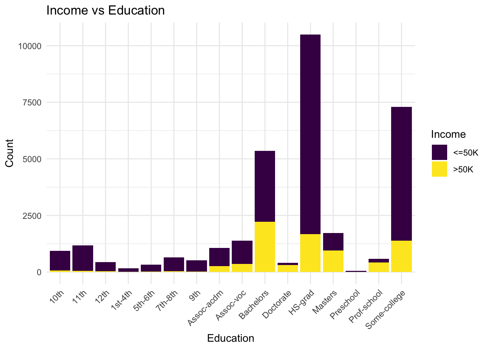
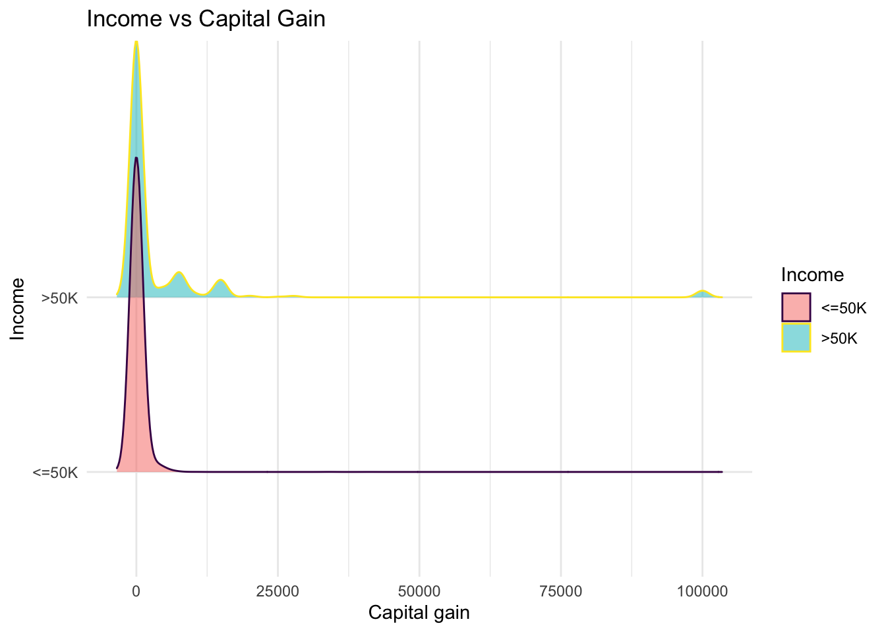

Proposal: Relationship between Income, Education Level and Capital Gain
Introduction and Data
This data set was obtained from the Machine Learning Repository of University of California, Irvine Census Income Data Set who referenced the US census bureau’s database as the original source of data. It consists of 51 state samples, each with a different probability of selection. There are 32560 data set instances, with a mix of continuous and discrete data. The data set contains 15 attributes, which include a person’s education level, race, capital gain and other relevant information.
Research Question
This research seeks to investigate the relationship between a person’s income and their educational background, and capital gain. Our hypothesis is that as the education level and capital gain of a person increases, their income will also increase.
Exploratory Data Analysis
What is your outcome variable(s)? How well does it measure the outcome you are interested in? How does it relate to your hypotheses? Is it numeric continuous or discrete? Or categorical ordinal?
Our outcome variable is income. It is a categorical ordinal variable. It tells us whether the person earns more or less than $50,000 per year. It can be a general way to measure our outcome because it just gives us a range of income the person earns in a year rather than an exact numerical value. It relates to our hypothesis because it helps us understand how education and capital gain relates to the range of income a person earns annually, i.e if higher education and higher capital gain leads to being in a high income category or vice versa.
What are your key explanatory variables? Are they numeric continuous or discrete or categorical ordinal or nominal?
Our key explanatory variables are capital gain and education level. Capital gain is a numerical discrete variable and education level is a categorical ordinal variable. Education level tells us what level of education the person was able to finish and capital gain tells us how much profit a person earned on the sale of an asset which has increased in value over the holding period. (An asset may include tangible property, a car, a business, or intangible property such as shares.)
Data Visualization

Picking joint bandwidth of 1150
Dataframe Glimpse
Rows: 32,560
Columns: 15
$ age <dbl> 50, 38, 53, 28, 37, 49, 52, 31, 42, 37, 30, 23, 32, 40,…
$ workclass <chr> "Self-emp-not-inc", "Private", "Private", "Private", "P…
$ fnlwgt <dbl> 83311, 215646, 234721, 338409, 284582, 160187, 209642, …
$ education <chr> "Bachelors", "HS-grad", "11th", "Bachelors", "Masters",…
$ education_num <dbl> 13, 9, 7, 13, 14, 5, 9, 14, 13, 10, 13, 13, 12, 11, 4, …
$ marital_status <chr> "Married-civ-spouse", "Divorced", "Married-civ-spouse",…
$ occupation <chr> "Exec-managerial", "Handlers-cleaners", "Handlers-clean…
$ relationship <chr> "Husband", "Not-in-family", "Husband", "Wife", "Wife", …
$ race <chr> "White", "White", "Black", "Black", "White", "Black", "…
$ sex <chr> "Male", "Male", "Male", "Female", "Female", "Female", "…
$ capital_gain <dbl> 0, 0, 0, 0, 0, 0, 0, 14084, 5178, 0, 0, 0, 0, 0, 0, 0, …
$ capital_loss <dbl> 0, 0, 0, 0, 0, 0, 0, 0, 0, 0, 0, 0, 0, 0, 0, 0, 0, 0, 0…
$ hours_per_week <dbl> 13, 40, 40, 40, 40, 16, 45, 50, 40, 80, 40, 30, 50, 40,…
$ native_country <chr> "United-States", "United-States", "United-States", "Cub…
$ income <chr> "<=50K", "<=50K", "<=50K", "<=50K", "<=50K", "<=50K", "…